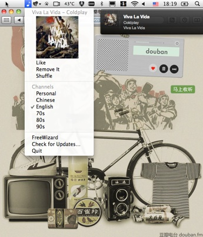

FanRadio - Free Music For Your Mac
- RollingCode.org
Stays quietly in your menu bar
Supports personal channel for your taste and more public channels
Supports global hotkey
Supports Growl integration
Built-in AppleScript (Plug it to Adium)
Requires Mac OSX 10.5 or later
Unofficial Douban Radio client on your Mac, without Flash
2010年10月6日
